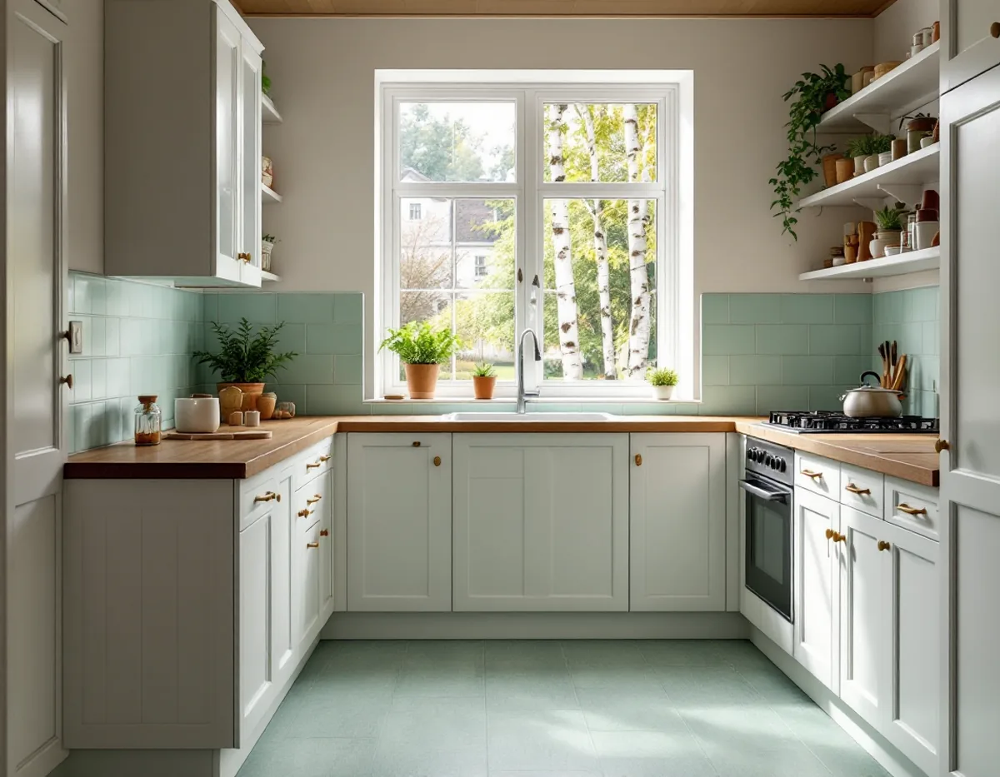
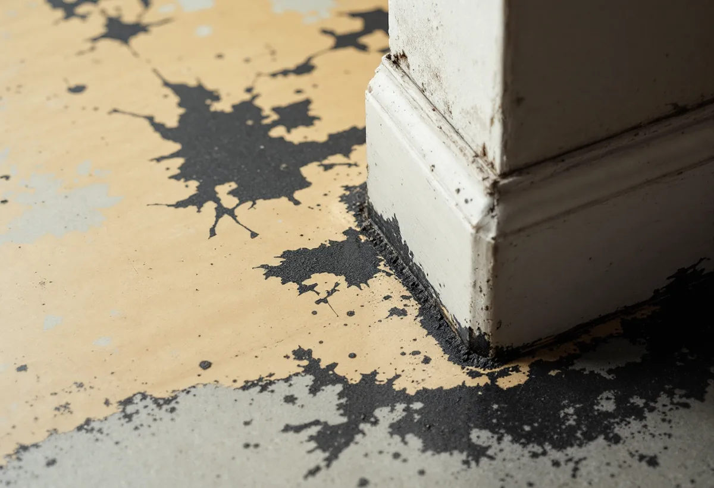

Platsbesök
Vi frågar om husets byggår och tidigare golvbyten och tittar på mattan och limmet.
Under en gammal plastmatta kan det finnas ett lim som ser harmlöst ut men som inte ska slipas eller skrapas utan vidare. I hus som byggdes innan asbest förbjöds är det därför klokt att veta vad golvet består av innan det rivs. Geal Entreprenad AB lägger nya golv och slipar trägolv i Vällingby, och här är ordningen vi följer.

Vällingby var enligt stadens vägledning Varsam utveckling av småhus- och villaområden den första tunnelbanestaden och invigdes 1954. Det var den stadsdel där ABC-stadens tankar genomfördes mest konsekvent. Högre hus placerades nära centrum och tunnelbanan, och skalan trappades ner mot grupper av rad- och kedjehus längst ut. Vällingby och Råcksta är utpekade som riksintresse för kulturmiljövården, och vägledningen lyfter fram radhusområdena Atlantis och Omega som kulturhistoriskt synnerligen värdefulla.
Vägledningen beskriver hur byggnadstekniken på 1950-talet blev alltmer rationell och industrialiserad. Områdesfakta för 2025 räknar 4 391 bostäder i Vällingby. 2 076 av dem är bostadsrätter, och 449 ligger i småhus. Många av husen är alltså byggda långt före 1982, även om nya bostäder har tillkommit på 2000-talet och golv kan ha bytts sedan dess.

Arbetsmiljöverket skriver att man ska räkna med att det finns asbest i hus som byggdes fram till 1982, och att asbest har använts i golvmaterial av plast. I bostadshus nämner myndigheten plastmattor och golvplattor, golvbeläggningar, kakelfix och fog samt mattlim. Boverket räknar dessutom upp lim och skikt under mattor och plattor och golvmassor.
Myndigheten påpekar också att asbesthaltiga material ibland kan finnas i yngre hus, eftersom produkter kan ha lagerhållits eller importerats efter förbudet. Bunden asbest dammar normalt inte så länge man inte rör materialet. Det är när en matta rivs, ett lim skrapas eller en golvmassa slipas som fibrerna kan frigöras. Boverket påpekar att asbesten ofta kan vara dold under andra ytskikt, till exempel under en nyare golvmatta, och att det i regel krävs ett prov som analyseras i mikroskop för att veta säkert.
Golvbranschen varnar för att äldre golv kan ha limmats ned med ett lim som innehåller asbest, så kallat svartlim. Golv som har limmats med det kan inte återvinnas, och vid osäkerhet ska en analys göras. Plastgolv som är äldre än 2000 kan dessutom innehålla vissa ftalater och tungmetallstabilisatorer som gör materialet till farligt avfall.
Visar analysen asbest ska materialet rivas av ett företag som har Arbetsmiljöverkets tillstånd för rivning och sanering av asbest. Tillståndet söks åtta veckor innan arbetet ska börja, och inomhus görs rivningen i en inneslutning med undertryck eller med så kallad glovebag-teknik. Vi lägger det nya golvet när saneringen är klar och underlaget är rent.
Boverket påminner om att miljöbalkens allmänna hänsynsregler gäller även privatpersoner. Den som gör något som kan påverka människors hälsa ska skaffa sig den kunskap som behövs och vidta de skyddsåtgärder som krävs. Enligt EU:s kemikalieregler får asbesthaltigt material som har tagits ner vid en rivning inte heller säljas eller överlåtas vidare.
Ibland är det bättre att låta en gammal matta ligga kvar och lägga det nya golvet ovanpå, så att ingen asbest frigörs. Det kräver ett jämnt och stabilt underlag och att höjden fungerar vid dörrar och trösklar. Vi bedömer det på plats tillsammans med dig.
Hur husens fasader och färger hanteras i riksintresset beskrivs under målare i Vällingby. Golvtyperna jämförs på sidan om golvläggning.
Vi frågar om husets byggår och tidigare golvbyten och tittar på mattan och limmet.
Kan materialet innehålla asbest föreslår vi ett prov innan något rivs.
Sanering, underlag och nytt golv redovisas som egna poster.
Asbesthaltigt material rivs av ett företag med tillstånd från Arbetsmiljöverket.
Underlaget kontrolleras och det nya golvet läggs.
Lister och trösklar monteras och vi går igenom skötseln.
Skatteverket ger rotavdrag för att byta golv och för att sanera asbest i samband med byggarbete, både i småhus och i bostadsrätter. Att mäta asbest ger däremot inget avdrag. I en bostadsrätt ska arbetet göras innanför lägenhetens väggar, tak och golv, och du ska ha underhållsansvaret enligt stadgarna.
Avdraget är 30 procent av arbetskostnaden, högst 50 000 kr per person och år och högst 75 000 kr tillsammans med rutavdrag. Material och resor ger inget avdrag. Geal drar avdraget direkt på fakturan.
Om golvet innehåller asbest, hur mycket som ska rivas och hur underlaget ser ut väger tyngst. Efter ett gratis platsbesök får du ett skriftligt kostnadsförslag.
Parkett, trägolv, klinker och slipning.
Golvläggning i Stockholm →Takbyte, takbesiktning och plåtarbeten.
Takläggare i Vällingby →Radhusen i riksintresset Vällingby–Råcksta.
Takrenovering i Vällingby →Riksintresset och villaområdena.
Attefallshus i Vällingby →Riksintresset, radhusen och våtzonerna.
Badrumsrenovering i Vällingby →Bygga till i riksintresset.
Byggföretag i Vällingby →Puts från 1950-talet och kulör i riksintresset.
Fasadmålning i Vällingby →Tegel, puts och skivor på tunnelbanestadens hus.
Fasadrenovering i Vällingby →Radhus och kedjehus i riksintresset.
Fönsterbyte i Vällingby →Radhusens fönster.
Fönsterrenovering i Vällingby →Lamellgolv, svikt och slitskikt.
Golvslipning i Vällingby →Kök i lägenheter och radhus.
Köksrenovering i Vällingby →Radhus och lägenheter i ABC-staden.
Målare i Vällingby →Takplåt, rännor och beslag i riksintresset.
Plåtslagare i Vällingby →Entréer, dörrar och räcken på radhusen.
Snickare i Vällingby →Kälvesta och husgrupperna.
Takbyte i Vällingby →Väggar från 1950-talet.
Tapetsering i Vällingby →Radhusen, riksintresset och lovet.
Tillbyggnad i Vällingby →ABC-staden, eternit och föreningen.
Totalrenovering i Vällingby →